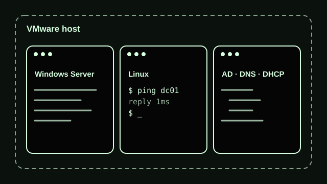
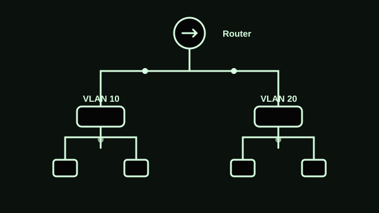
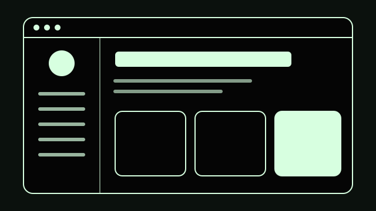
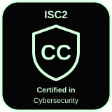
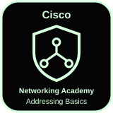

<!DOCTYPE html>
<html lang="en">
<head>
  <meta charset="UTF-8">
  <meta name="viewport" content="width=device-width, initial-scale=1">
  <title>Portfolio-FVESHYTT</title>
  <meta name="description" content="Fritz Vincent D. Estarez is a Network Administrator in Manila, Philippines. Network setup, Windows Server and Active Directory, VMware labs, and troubleshooting.">
  <meta name="author" content="Fritz Vincent D. Estarez">
  <meta name="theme-color" content="#050505">
  <!-- Replace https://fvestarez.netlify.app with your real URL before publishing -->
  <link rel="canonical" href="https://fvestarez.netlify.app/">
  <meta property="og:type" content="website">
  <meta property="og:title" content="Fritz Vincent Estarez | Network Administrator">
  <meta property="og:description" content="Networks that stay up. Windows Server, Active Directory, VMware and troubleshooting, based in Manila.">
  <meta property="og:url" content="https://fvestarez.netlify.app/">
  <meta property="og:image" content="https://fvestarez.netlify.app/og-image.png">
  <meta name="twitter:card" content="summary_large_image">
  <link rel="icon" href="data:image/svg+xml,%3Csvg xmlns='http://www.w3.org/2000/svg' viewBox='0 0 64 64'%3E%3Crect width='64' height='64' rx='14' fill='%23050505'/%3E%3Ctext x='32' y='43' font-size='30' font-family='sans-serif' font-weight='700' text-anchor='middle' fill='%23D7FFE0'%3EFE%3C/text%3E%3C/svg%3E">
  <link rel="preconnect" href="https://fonts.googleapis.com">
  <link rel="preconnect" href="https://fonts.gstatic.com" crossorigin>
  <link href="https://fonts.googleapis.com/css2?family=Poppins:wght@400;500;600;700&display=swap" rel="stylesheet">
  <link rel="stylesheet" href="styles.css">
  <script src="https://unpkg.com/@phosphor-icons/web@2.1.1" defer></script>
  <script type="application/ld+json">
  {
    "@context": "https://schema.org",
    "@type": "Person",
    "name": "Fritz Vincent D. Estarez",
    "jobTitle": "Network Administrator",
    "url": "https://fvestarez.netlify.app/",
    "email": "mailto:fvestarez22@gmail.com",
    "address": { "@type": "PostalAddress", "addressLocality": "Manila", "addressCountry": "PH" },
    "alumniOf": "Universidad de Manila",
    "knowsAbout": ["TCP/IP", "Routing and Switching", "Active Directory", "Windows Server", "VMware", "Network Security"]
  }
  </script>
</head>
<body>
  <a class="skip" href="#main">Skip to main content</a>

  <aside class="sidebar">
    <div class="profile">
      <div class="avatar">
        <span aria-hidden="true">FE</span>
        
      </div>
      <p class="name">Fritz Vincent Estarez</p>
      <p class="role">Network Administrator</p>
    </div>

    <nav aria-label="Main">
      <ul>
        <li><a href="#home" class="active"><i class="ph ph-house" aria-hidden="true"></i>Home</a></li>
        <li><a href="#projects"><i class="ph ph-folder-open" aria-hidden="true"></i>Projects</a></li>
        <li><a href="#services"><i class="ph ph-wrench" aria-hidden="true"></i>Services</a></li>
        <li><a href="#about"><i class="ph ph-user" aria-hidden="true"></i>About</a></li>
        <li><a href="#contact"><i class="ph ph-envelope-simple" aria-hidden="true"></i>Contact</a></li>
      </ul>
    </nav>

    <div class="textsize" role="group" aria-label="Text size">
      <button type="button" id="smaller" aria-label="Make text smaller"><i class="ph ph-text-aa" aria-hidden="true"></i>-</button>
      <button type="button" id="larger" aria-label="Make text larger"><i class="ph ph-text-aa" aria-hidden="true"></i>+</button>
    </div>
  </aside>

  <aside class="rail" aria-hidden="true"><canvas id="net"></canvas></aside>

  <main id="main">
    <section id="home" class="hero" aria-labelledby="h1">
      <h1 id="h1">Networks that stay up.</h1>
      <p class="lead">I'm Fritz, a network administrator in Manila. I keep routers, servers and user accounts running, and I build VMware labs to keep learning.</p>
      <a class="btn" href="#contact"><i class="ph ph-paper-plane-tilt" aria-hidden="true"></i>Get in touch</a>

      <div class="marquee-wrap">
        <h2 class="marquee-title">Tools I work with</h2>
        <div class="marquee" id="marquee">
          <ul class="track">
            <li><i class="ph ph-magnifying-glass" aria-hidden="true"></i>Wireshark</li>
            <li><i class="ph ph-sparkle" aria-hidden="true"></i>Claude</li>
            <li><i class="ph ph-graph" aria-hidden="true"></i>Packet Tracer</li>
            <li><i class="ph ph-network" aria-hidden="true"></i>GNS3</li>
            <li><i class="ph ph-magnifying-glass" aria-hidden="true"></i>Wireshark</li>
            <li><i class="ph ph-sparkle" aria-hidden="true"></i>Claude</li>
            <li><i class="ph ph-graph" aria-hidden="true"></i>Packet Tracer</li>
            <li><i class="ph ph-network" aria-hidden="true"></i>GNS3</li>
          </ul>
        </div>
        <button type="button" class="pause" id="pause" aria-pressed="false"><i class="ph ph-pause" aria-hidden="true"></i><span>Pause animations</span></button>
      </div>
    </section>

    <div class="bento">
      <article id="projects" class="box b-projects" aria-labelledby="h-projects">
        <h2 id="h-projects"><i class="ph ph-folder-open" aria-hidden="true"></i>Projects</h2>
        <p class="sub">Hands-on builds from my home lab. Swap in your own details and screenshots.</p>
        <div class="inner-grid">
          <div class="inner"></h3><p>Virtual machines running Windows Server and Linux for testing Active Directory, DHCP, DNS and Group Policy safely.</p></div>
          <div class="inner"></h3><p>VLANs, routing and switching topologies built in GNS3 and Packet Tracer, then checked with Wireshark captures.</p></div>
          <div class="inner"></h3><p>Vibe-coded with plain HTML, CSS and JavaScript to learn how websites are built and found on search engines.</p></div>
        </div>
      </article>

      <article id="services" class="box b-services" aria-labelledby="h-services">
        <h2 id="h-services"><i class="ph ph-wrench" aria-hidden="true"></i>Services</h2>
        <p class="sub">What I can help your team with.</p>
        <ul class="list">
          <li><i class="ph ph-plugs-connected" aria-hidden="true"></i><div><h3>Network setup and support</h3><p>Install, configure and monitor routers, switches and servers.</p></div></li>
          <li><i class="ph ph-users-three" aria-hidden="true"></i><div><h3>Windows Server and Active Directory</h3><p>User accounts, permissions, Group Policy and access control.</p></div></li>
          <li><i class="ph ph-first-aid-kit" aria-hidden="true"></i><div><h3>Troubleshooting</h3><p>Hardware, software and network issues, solved and documented.</p></div></li>
          <li><i class="ph ph-shield-check" aria-hidden="true"></i><div><h3>Security basics</h3><p>Access control, compliance and identity fundamentals.</p></div></li>
        </ul>
      </article>

      <article id="about" class="box b-about" aria-labelledby="h-about">
        <h2 id="h-about"><i class="ph ph-user" aria-hidden="true"></i>About</h2>
        <p>I'm a junior network administrator with a Bachelor of Science in Information Technology from Universidad de Manila, graduating as a consistent Dean's Lister. I care about reliable IT operations and keep growing my networking skills.</p>
        <h3>Experience</h3>
        <ul class="timeline">
          <li><strong>Network Administrator, Xytron International</strong><span>Dec 2025 to Sept 2026</span></li>
          <li><strong>Technical Engineer Intern, Micro Pacific Technology &amp; System Corp</strong><span>Jan 2025 to May 2025</span></li>
        </ul>
      </article>


      <article class="box solid b-cert" aria-labelledby="h-cert">
        <h2 id="h-cert"><i class="ph ph-shield-check" aria-hidden="true"></i>Certifications</h2>
        <ul class="certs">
          <li><span>ISC2 Certified in Cybersecurity (CC), Aug 2025</span></li>
          <li><span>Microsoft cybersecurity: security, compliance and identity fundamentals, Oct 2025</span></li>
          <li><span>Cisco Networking Academy: network addressing and basic troubleshooting, Jun 2024</span></li>
        </ul>
      </article>

      <article id="contact" class="box b-contact" aria-labelledby="h-contact">
        <h2 id="h-contact"><i class="ph ph-envelope-simple" aria-hidden="true"></i>Contact</h2>
        <p class="sub">Email is the best way to reach me.</p>
        <a class="btn" href="mailto:fvestarez22@gmail.com"><i class="ph ph-envelope-simple" aria-hidden="true"></i>fvestarez22@gmail.com</a>
        <p class="loc"><i class="ph ph-map-pin" aria-hidden="true"></i>Tondo, Manila, Philippines</p>
      </article>
    </div>

    <footer><p>&copy; 2026 Fritz Vincent D. Estarez</p></footer>
  </main>
  <script src="script.js" defer></script>
</body>
</html>
